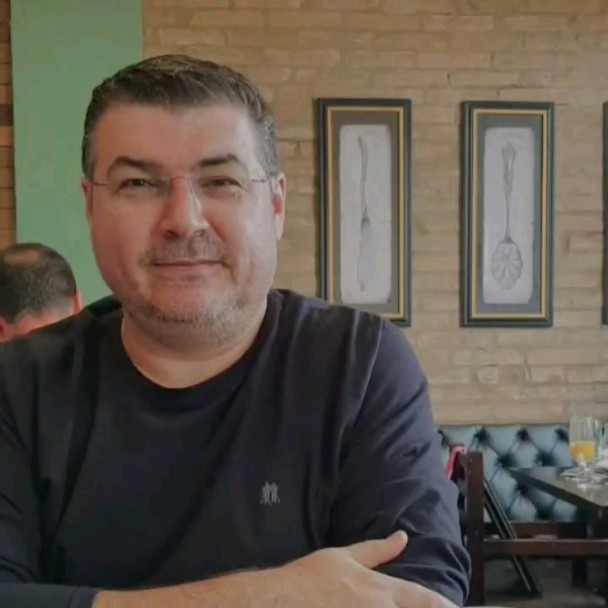

-

Mundo NERD
- Criciúma, Santa Catarina, Brasil
Rodrigo Alexandre Gonçalves
Desenvolvedor de software sênior
- Meu nome é Rodrigo, também conhecido como tiozinho!
- Trabalho com desenvolvimento desktop a muitos anos e estou buscando conhecimento para desenvolvimento web, por isso iniciei este projeto.
- A ideia é que o projeto sirva como um portifólio, mas também como um propagador de conhecimento.
- Se você tem uma dica que deseja compartilhar, entre em contato pelo e-mail abaixo:
rodrigo.ag.dev@gmail.com
Aprensetação
- Ao acionar o menu você encontrará algumas opções. Elas podem mudar a qualquer momento, dependendo da minha disponibilidade para atualizar o projeto!